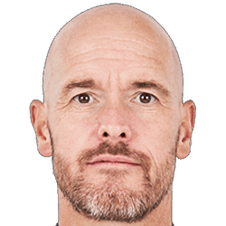

ABOUT
ERIK TEN HAG
Erik ten Hag (lahir 2 Februari 1970) adalah seorang mantan pemain dan pelatih sepak bola Belanda. Sebagai pelatih, ia membawa AFC Ajax menjuarai Liga Belanda sebanyak tiga kali dan mencapai semifinal Liga Champions UEFA musim 2018–2019.[1][2] Sejak tahun 2022, ia merupakan manajer tim Liga Utama Inggris Manchester United.